Pick a break, a slope, or a specific hole. The green reshapes itself to match — then holds it, outdoors, until you choose the next one. No rebuild, no crew, no compromise. Every configuration you create is saved, and yours to return to before any session.
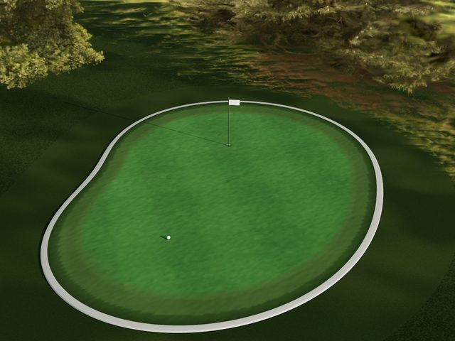
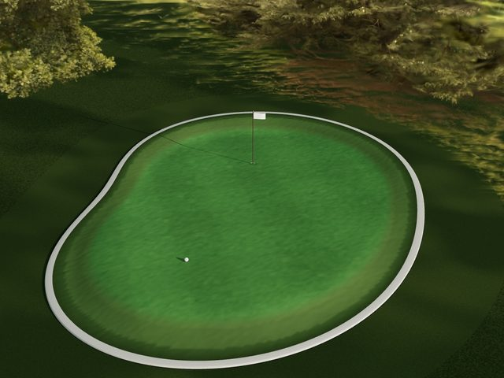
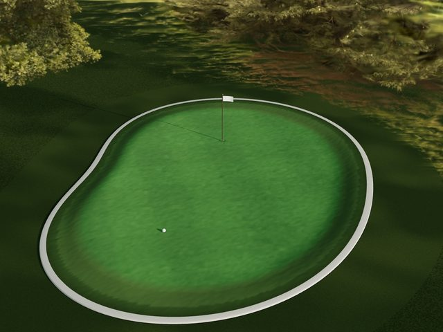
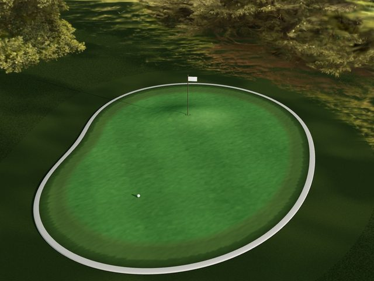
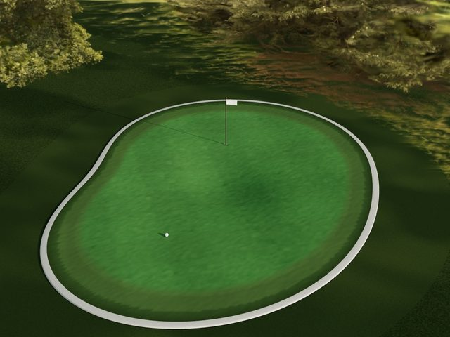
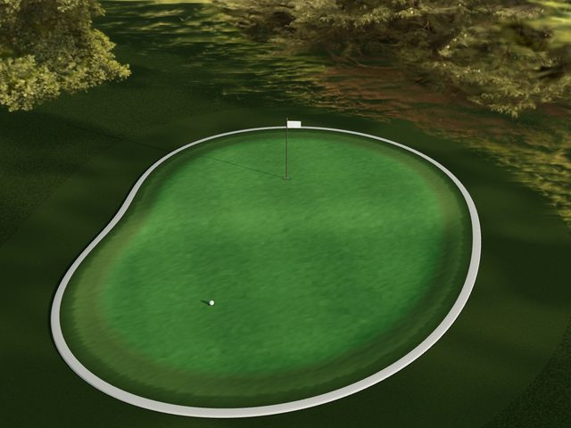
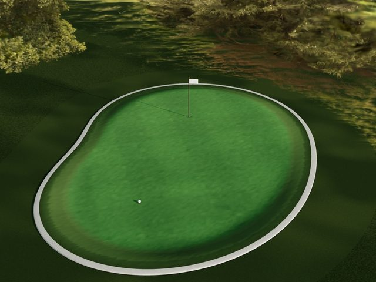
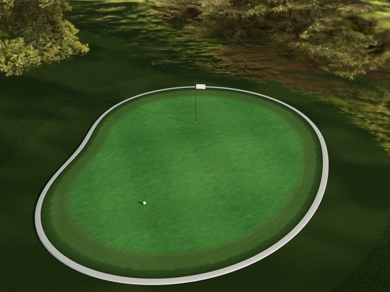
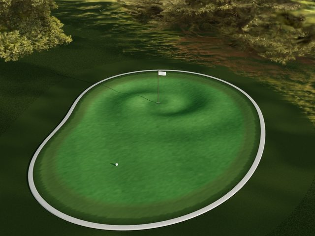
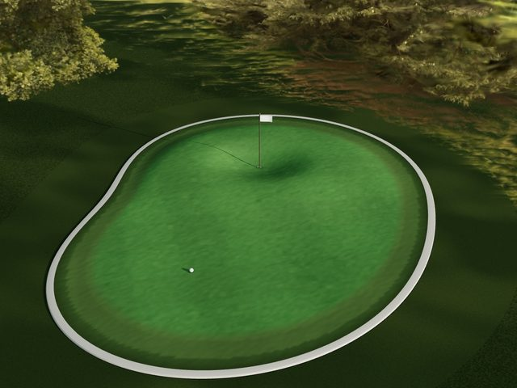
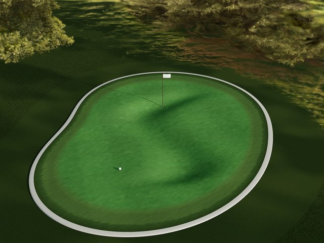
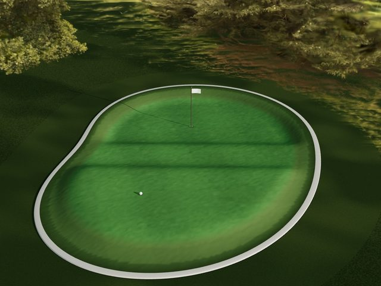
It lives in the yard the way the landscape does — through the season, through the weather, without being thought about.
TerraPutt is made to order for your property and commissioned on site. Here is what that involves, end to end.
Every other serious system in a home — light, climate, sound, water — became something you could shape on command. The ground never did. It stayed poured, planted, and fixed.
TerraPutt is the first step past that: an outdoor surface that reconfigures on demand. A putting green now, a wider language of responsive landscape after it. We're building the first ones by hand, for a small number of homes.
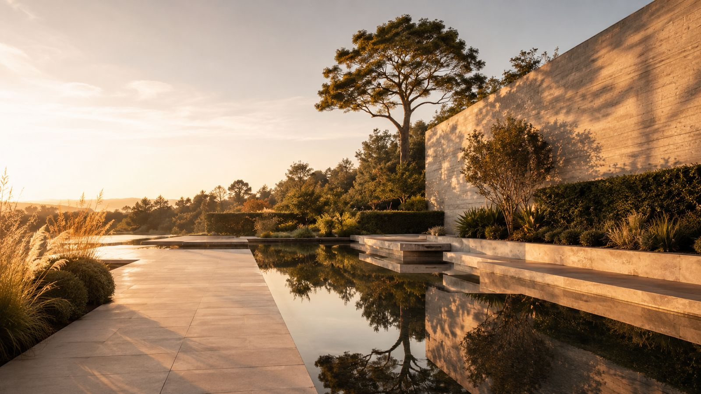
The first installations are commissioned by application. Tell us about your home and your game, and we'll be in touch personally, in confidence.
Investment-grade installations · Pricing on application
Apply to be a Founding Owner